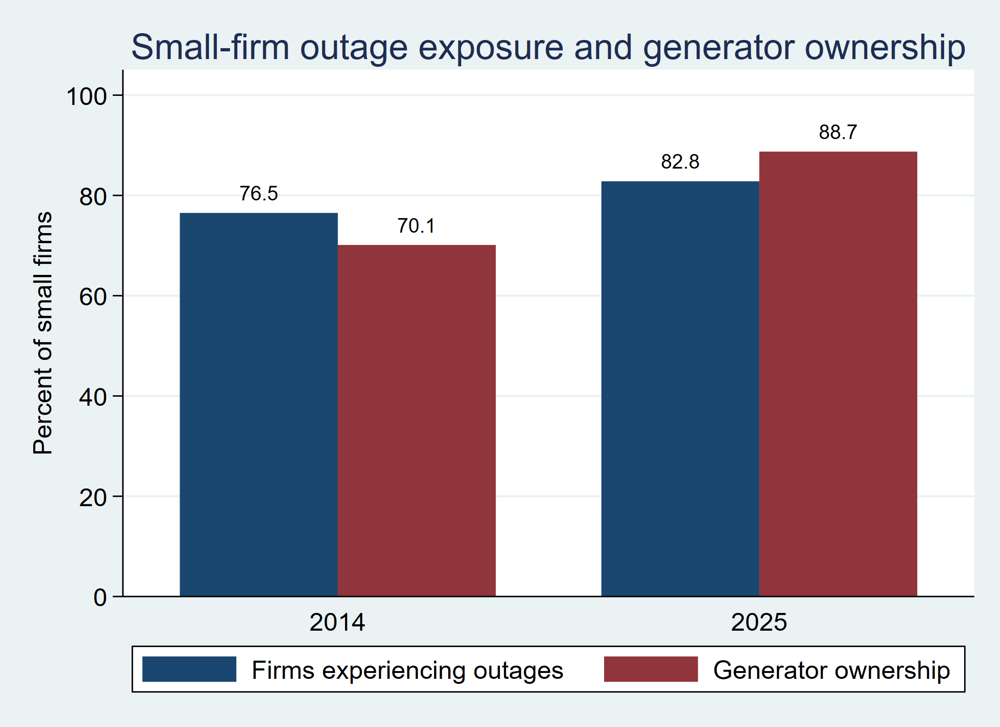
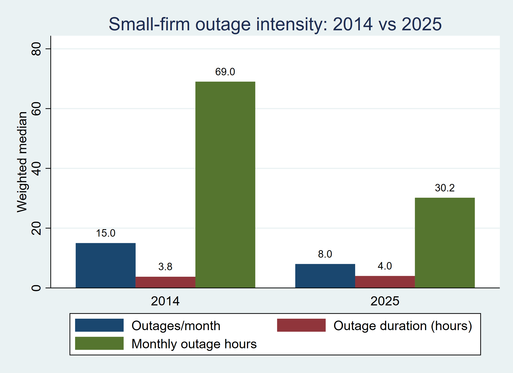
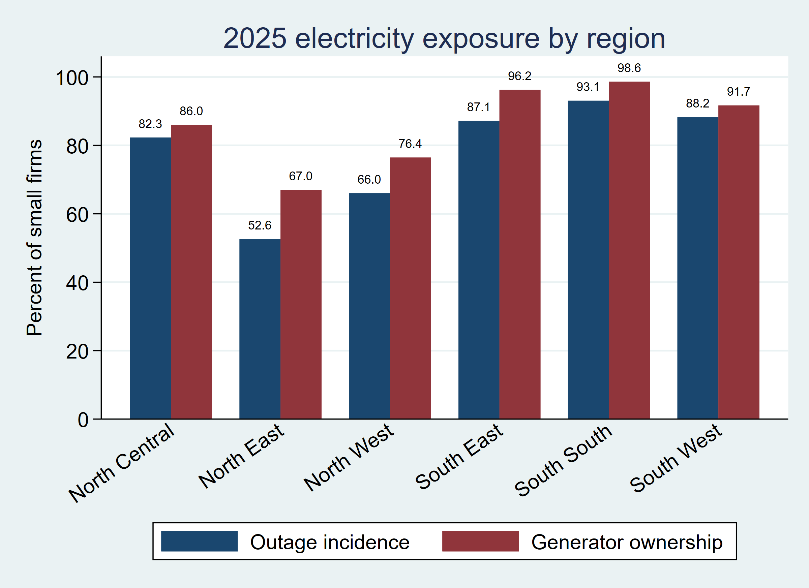

Introduction
Electricity reliability matters to firms because production depends on timing as well as access. A connected firm can still lose productive hours when machinery, digital systems, refrigeration, or other electrical processes are interrupted. Firms can adapt through backup generation and input substitution, but those adjustments are costly and do not fully replace reliable grid electricity (Allcott et al., 2016).
Small firms have fewer options for spreading the fixed cost of generators, fuel storage, maintenance, and production rescheduling. The productivity consequences of unreliable electricity appear to be larger for smaller firms (Poczter, 2017). Negative blackout effects have also been reported for the labour productivity of micro and small enterprises (Falentina & Resosudarmo, 2019).
African evidence indicates that the burden appears in more than one performance measure. Outages reduce firm sales across Sub-Saharan Africa (Cole et al., 2018). Electricity shortages also reduce employment and constrain firm entry (Mensah, 2024). These results make it useful to examine direct losses, growth, productivity, and labour outcomes separately rather than expecting one coefficient to summarize the entire electricity constraint.
Private generation is widespread but is not a costless solution. Self-generation can reduce potential outage losses while leaving firms with significant coping costs (Oseni & Pollitt, 2015). The effect of self-generation on capacity utilization also depends on the extent to which firms actually rely on it, which suggests that generator ownership alone is an incomplete resilience measure (Zhang et al., 2025).
Electricity unreliability can lower effective capital and labour utilization even when a firm remains connected to the grid. Firms can respond to shortages by purchasing intermediate inputs instead of producing electricity-intensive inputs internally (Fisher-Vanden et al., 2015). This means measured sales can be partly preserved while production costs and production organization deteriorate.
The distinction between direct losses and broader performance is therefore important. Unexpected shortages are more damaging than predictable load-shedding, which suggests that firms use scheduling and input adjustment to reduce the effect of known interruptions (Grainger & Zhang, 2019). The economic cost of unreliable electricity can consequently remain large even when annual sales growth is not statistically different across firms.
Small firms may be especially vulnerable because they have less finance and less redundancy in equipment, labour, and inventory. Small firms can adjust labour and working time when electricity is unavailable (Hardy & McCasland, 2021). Load shedding also reduces employment and hours worked in South Africa, with small-firm workers showing notable vulnerability (Bhorat & Köhler, 2025).
Generators can protect some production but introduce fuel, maintenance, and capital costs. Backup generators do not fully eliminate the negative effects of power cuts (Elliott et al., 2021). Generator use is more valuable when unreliability is severe, which helps explain why a simple ownership indicator may fail to capture effective resilience (Kupzig, 2023).
Cleaner distributed alternatives can change the cost structure of coping. Nigerian MSMEs using solar subscriptions have been found to record higher monthly earnings and lower energy expenditure after propensity-score matching (Owusu-Sekyere et al., 2024). That result supports evaluating energy resilience in terms of reliability and total cost rather than generator ownership alone.
The evidence does not imply that every outage must produce a statistically significant decline in every performance outcome. Firms can preserve output by changing inputs, work schedules, products, or energy sources. The combined frequency and duration of shortages have nevertheless been associated with lower annual sales in Sub-Saharan Africa, particularly for small firms (Osei-Gyebi & Dramani, 2023).
Research question
This article investigates how electricity unreliability is associated with the performance of formal small firms in Nigeria and whether generator ownership materially changes that relationship. The primary question is: how are outage incidence and outage intensity related to reported outage losses, real sales growth, employment growth, and labour productivity among small formal firms in the 2025 Nigeria Enterprise Survey?
The 2014 cross-section is used as a benchmark, while the verified 2007/2009-to-2014 linked-firm sample provides a historical first-difference check. The design is intended to distinguish the clearest operating-cost evidence from weaker or less precisely estimated employment, sales-growth, and productivity relationships rather than treating all performance outcomes as if they tell the same story.
Data and methodology
Data, sample and research design
The analysis uses a quantitative observational design based on firm-level World Bank Enterprise Survey data. The Nigeria 2025 Enterprise Survey is the main contemporary dataset and the Nigeria 2014 Enterprise Survey is estimated separately as a historical benchmark. They are not treated as a 2014-to-2025 panel because the released public identifiers do not support a defensible match. A verified historical panel linking firms from 2007-to-2014 and 2009-to-2014 is used only as complementary longitudinal evidence.
The target population is formal small firms with 5 to 19 permanent full-time workers. For sales-growth and employment-growth models, small-firm status is defined using lagged baseline employment so that the sample is not selected on the later employment outcome. For log real sales per worker and outage losses, small-firm status is based on current employment.
Variables and growth measurement
Electricity reliability is represented by outage incidence, outages per month, average outage duration, and constructed monthly outage hours. The main regressions use three alternative exposure measures: any outage, ln(1 + outages per month), and ln(1 + monthly outage hours). The outcomes are annualized real sales growth, annualized employment growth, log real sales per worker, and outage losses as a percentage of annual sales. Growth is measured between the establishment's last completed fiscal year and that fiscal year minus two, not simply between the survey year and two years earlier. Dividing the log difference by two is therefore intentional and is consistent with the WBES rule that annualization should use the actual number of years between the two fiscal periods (World Bank Enterprise Surveys, 2017).
The actual fiscal-year pairs are mostly FY2022 to FY2024 in the 2025 data, with a small number of firms using FY2023 to FY2025. Specifically, 500 of the 510 sales-growth observations and 524 of the 534 employment-growth observations use FY2022 to FY2024; the remaining 10 observations in each outcome use FY2023 to FY2025. For the 2014 data, the reference fiscal year is approximated from interview year because the released file does not retain a20y. This yields mostly FY2011 to FY2013, with a smaller FY2012 to FY2014 group. The two-year denominator should therefore not be interpreted as a mistake.
The study uses its own annualized log-growth measures rather than the published WBES perf1 and perf2 indicators. The WBES indicators use a symmetric percentage-change formula, while this article uses log differences; real sales in this study are CPI-adjusted rather than constructed with the GDP-deflator procedure used for the official WBES real-sales indicator. This distinction is methodological and does not change the underlying fiscal-year pairs used in the regressions (World Bank Enterprise Surveys, 2017).
Estimation strategy
The 2014 and 2025 cross-sections are estimated separately by weighted least squares. The WBES median sampling weight is applied as an analytic weight, and heteroskedasticity-robust standard errors are used. Each model controls for firm age, manager experience, export status, foreign ownership share, female ownership, and access to finance, together with region-zone and broad-sector fixed effects. The three electricity exposures are entered in separate regressions rather than simultaneously.
Model specification
The main cross-sectional model is:
(1) Yᵢₜ = αₜ + βₜEᵢₜ + γₜ′Xᵢₜ + μᵣ + λₛ + εᵢₜ
Yᵢₜ denotes the selected firm-performance outcome, Eᵢₜ is the selected outage measure, Xᵢₜ is the vector of firm controls, μᵣ represents region fixed effects, and λₛ represents broad-sector fixed effects. βₜ is the coefficient of interest. It is interpreted as a conditional association, not a causal effect.
The two annualized growth variables are defined as:
(2) SalesGrowthᵢₜ = [ln(RealSalesᵢₜ) - ln(RealSalesᵢ,ₜ₋₂)] / 2
(3) EmpGrowthᵢₜ = [ln(Employmentᵢₜ) - ln(Employmentᵢ,ₜ₋₂)] / 2
Generator resilience is assessed with the following interaction model:
(4) Yᵢₜ = αₜ + β₁Oᵢₜ + β₂Gᵢₜ + β₃(Oᵢₜ × Gᵢₜ) + γ′Xᵢₜ + μᵣ + λₛ + εᵢₜ
Oᵢₜ is outage incidence and Gᵢₜ is generator ownership. β₃ indicates whether the outage-performance relationship differs between firms with and without generators. Since generator ownership is endogenous to both outage conditions and firm resources, the interaction is treated as descriptive heterogeneity.
For the verified historical linked-firm sample, the first-difference specification is:
(5) ΔYᵢ = α + βΔEᵢ + φΔGᵢ + ψΔFᵢ + δᵣ₀ + κₚ + uᵢ
ΔYᵢ is the annualized change in log real sales or log employment, ΔEᵢ is the change in outage incidence or ln(1 + outages per month), ΔGᵢ is the change in generator ownership, and ΔFᵢ is the change in finance access. The panel models include baseline-region and pair-type fixed effects and use heteroskedasticity-robust standard errors.
Robustness and interpretation
The main outage-frequency model is checked against two alternatives: excluding observations above the survey-year 99th percentile of outage frequency and estimating the same specification without weights. The historical first-difference models provide an additional check based on within-firm changes. Because outage exposure and coping choices are not randomly assigned, the contemporary coefficients are presented as conditional associations rather than causal estimates.
Findings and discussion
Electricity exposure and coping patterns
The 2025 survey describes a business environment in which outages and private backup generation coexist at very high levels. In the weighted small-firm sample, 82.8 percent experienced outages and 88.7 percent owned or shared a generator. The median firm experienced eight outages per month, with an average duration of four hours, producing a median of about 30.2 outage hours per month.
The 2014 benchmark shows a different mix of reliability and coping. Outage incidence was 76.5 percent, the median firm reported 15 outages per month, median monthly outage hours were 69.0, and generator ownership was 70.1 percent. By 2025, the median frequency and monthly outage hours were lower, but outage incidence and generator ownership were higher. Because the surveys are separate cross-sections with different samples and strata, these values are descriptive rather than a clean before-and-after trend.
This combination of widespread outages and even more widespread generator ownership fits an adaptation pattern in which firms internalize part of the electricity-reliability problem. African firms use self-generation to reduce potential outage losses, but they still bear substantial private coping costs (Oseni & Pollitt, 2015). The high 2025 generator rate should therefore not be interpreted as evidence that the electricity constraint has been solved.
| Indicator | 2014 | 2025 | Statistic |
|---|---|---|---|
| Firms experiencing outages (%) | 76.5 | 82.8 | Mean |
| Outages per month | 15.0 | 8.0 | Median |
| Average outage duration (hours) | 3.8 | 4.0 | Median |
| Monthly outage hours | 69.0 | 30.2 | Median |
| Outage losses (% of sales) | 3.0 | 0.0 | Median |
| Generator ownership (%) | 70.1 | 88.7 | Mean |
| Electricity from own/shared generator (%) | 40.0 | 50.0 | Median |
Note: Values are reproduced from the Stata output. Means are survey-weighted; medians use the WBES median survey weight. Source: Nigeria World Bank Enterprise Surveys, 2014 and 2025.

Source: Stata output from the Nigeria World Bank Enterprise Surveys, 2014 and 2025.

Source: Stata output from the Nigeria World Bank Enterprise Surveys, 2014 and 2025.
Direct outage losses are the clearest result
The strongest 2025 result concerns the losses that firms themselves attribute to electricity interruptions. The coefficient on ln(1 + outages per month) is 4.1109 for outage losses as a percentage of sales, with p < 0.001. The result remains large when observations above the survey-year 99th percentile of outage frequency are excluded, where the coefficient is 3.9247. Large monetary interruption costs have likewise been documented among Ethiopian manufacturers, which supports treating the direct-loss channel as economically meaningful (Entele & Ayalew, 2024).
The magnitude can be illustrated without treating the coefficient as causal. Moving from eight to sixteen outages per month increases ln(1 + outages per month) by about 0.636. Multiplying this change by the estimated outage-loss coefficient gives an illustrative increase of roughly 2.6 percentage points in the reported loss share, holding the other model variables constant.
The result is consistent with evidence that outage costs can remain visible even when broader performance responses are harder to identify. Lower total factor productivity has been documented among power-constrained firms across developing countries, although backup generation or innovation capacity can mitigate part of that loss (Apeti & Ly, 2024). Adaptation can therefore weaken the observed relationship between outages and a single annual performance measure without removing the underlying cost.
Employment appears more sensitive than sales growth or productivity
The broader growth outcomes are less decisive. The 2025 coefficient on ln(1 + outages per month) is 0.0116 for annualized real sales growth with p = 0.2491, so the study does not find a statistically precise sales-growth relationship in the main weighted model. The corresponding employment-growth coefficient is -0.0148 with p = 0.0536, while the coefficient for log real sales per worker is -0.1475 with p = 0.1070. The employment result is therefore suggestive, whereas the sales and productivity results are statistically imprecise.
The employment result deserves attention because it fits a mechanism observed in other settings. Firms can shift part of an electricity shock into labour scheduling and hours (Hardy & McCasland, 2021). Electricity shortages also reduce employment in Africa, although the present Nigerian coefficient is weaker and should not be treated as a causal replication (Mensah, 2024).
The non-significant sales-growth result should not be overstated in either direction. It does not establish that outages have no sales consequence, and it also does not justify importing a negative effect from studies in other countries. It simply indicates that the 2025 weighted cross-section does not estimate a precise relationship between outage frequency and this particular annualized sales-growth measure.
| Outcome | Any outage | ln(1 + outages/month) | ln(1 + monthly outage hours) | N range | Interpretation |
|---|---|---|---|---|---|
| Real sales growth | 0.0384(0.0321) | 0.0116(0.0101) | -0.0025(0.0074) | 463-500 | No statistically significant relationship |
| Employment growth | 0.0049(0.0216) | -0.0148*(0.0077) | -0.0012(0.0051) | 475-519 | Frequency negative, borderline significance |
| Real sales per worker | 0.0005(0.2905) | -0.1475(0.0915) | -0.0223(0.0611) | 488-532 | Negative frequency coefficient, imprecise |
| Outage losses (% sales) | 6.8160***(1.5702) | 4.1109***(0.8764) | 2.3159***(0.6187) | 333-355 | Strong positive relationship across measures |
Note: Robust standard errors are in parentheses. *** p < 0.01, ** p < 0.05, * p < 0.10. Models use WBES median survey weights, firm controls, region fixed effects and broad-sector fixed effects. Source: Stata estimates from the Nigeria 2025 Enterprise Survey.
Robustness: direct losses remain strong, employment is sensitive
The robustness checks reinforce the distinction between a strong direct-loss channel and a more tentative employment channel. Excluding extreme outage-frequency observations leaves employment growth negative at -0.0138 with p = 0.0941, while the unweighted estimate is -0.0179 with p = 0.0016. The outage-loss relationship remains strongly significant across these specifications. The weight sensitivity means the employment result should remain qualified.
This sensitivity is analytically important. It means the employment finding should be described as suggestive rather than definitive, even though its direction is consistent with recent labour-market evidence. The 2025 result is therefore best read as a signal that employment may be one margin of firm adjustment, not as a precise causal estimate of job loss.
| Outcome | Specification | Coefficient | Robust SE | p-value | N |
|---|---|---|---|---|---|
| Real sales growth | Main weighted | 0.0116 | 0.0101 | 0.2491 | 469 |
| Real sales growth | Weighted, outage frequency > p99 excluded | 0.0142 | 0.0112 | 0.2051 | 462 |
| Real sales growth | Unweighted OLS | 0.0085 | 0.0098 | 0.3869 | 469 |
| Employment growth | Main weighted | -0.0148* | 0.0077 | 0.0536 | 481 |
| Employment growth | Weighted, outage frequency > p99 excluded | -0.0138* | 0.0083 | 0.0941 | 474 |
| Employment growth | Unweighted OLS | -0.0179*** | 0.0057 | 0.0016 | 481 |
| Log real sales per worker | Main weighted | -0.1475 | 0.0915 | 0.1070 | 494 |
| Log real sales per worker | Weighted, outage frequency > p99 excluded | -0.1481 | 0.1000 | 0.1384 | 486 |
| Log real sales per worker | Unweighted OLS | -0.0761 | 0.0510 | 0.1357 | 494 |
| Outage losses (% of sales) | Main weighted | 4.1109*** | 0.8764 | 0.0000 | 336 |
| Outage losses (% of sales) | Weighted, outage frequency > p99 excluded | 3.9247*** | 0.9151 | 0.0000 | 328 |
| Outage losses (% of sales) | Unweighted OLS | 5.1153*** | 0.6758 | 0.0000 | 336 |
Note: The exposure variable is ln(1 + outages per month). The table compares the main weighted estimate, a specification excluding outage frequency above the survey-year 99th percentile, and unweighted OLS. Source: Stata robustness estimates.
Historical first-difference evidence
The verified historical panel does not produce strong evidence of an outage effect on real sales growth, but the employment estimates again point in a negative direction. The coefficient on the change in ln(1 + outages per month) is -0.0072 with p approximately 0.082 in the baseline model and -0.0075 with p approximately 0.108 after adding changes in generator ownership and finance access. These estimates are not decisive, but they provide an independent reason to keep the labour channel in view.
The panel estimates are not sufficiently precise to settle the employment question because the linked sample is smaller and covers an earlier period. Their value is methodological rather than conclusive: first differencing removes time-invariant firm characteristics, so the repeated negative direction is not driven solely by fixed cross-sectional differences between firms.
| Outcome | Exposure change | Additional change controls | Coefficient | Robust SE | N |
|---|---|---|---|---|---|
| Real sales | Change in outage incidence | None | -0.0312 | 0.0477 | 296 |
| Real sales | Change in outage incidence | Delta generator ownership + Delta finance access | -0.0545 | 0.0550 | 222 |
| Real sales | Change in ln(1 + outages/month) | None | 0.0048 | 0.0125 | 253 |
| Real sales | Change in ln(1 + outages/month) | Delta generator ownership + Delta finance access | -0.0009 | 0.0144 | 191 |
| Employment | Change in outage incidence | None | -0.0230 | 0.0181 | 317 |
| Employment | Change in outage incidence | Delta generator ownership + Delta finance access | -0.0296 | 0.0201 | 237 |
| Employment | Change in ln(1 + outages/month) | None | -0.0072* | 0.0041 | 259 |
| Employment | Change in ln(1 + outages/month) | Delta generator ownership + Delta finance access | -0.0075 | 0.0047 | 195 |
Note: The verified panel links firms observed in 2007 or 2009 to 2014. Models include baseline-region and pair-type fixed effects; some specifications additionally control for changes in generator ownership and finance access. Source: Stata estimates from the verified WBES panel.
Generator ownership does not consistently buffer performance
Generator ownership is extremely common in the 2025 sample, yet the interaction regressions do not show a consistent buffering effect on sales growth, employment growth, or labour productivity. This does not mean generators are useless. It means that ownership alone does not reveal generator capacity, fuel affordability, operating time, or the share of productive load actually served.
This interpretation fits the broader evidence. Generators do not fully mitigate outage-related productivity losses (Elliott et al., 2021). Widespread generator dependence can also become a costly resilience regime, which is consistent with the idea that firms can remain operational while paying a substantial private energy penalty (Yuan et al., 2026).
Regional variation in electricity exposure
The 2025 regional picture reinforces the national result: unreliable electricity is widespread, but the intensity of the problem differs materially across zones. Weighted outage incidence ranges from 52.6 percent in the North East to 93.1 percent in the South South, while generator ownership ranges from 67.0 percent to 98.6 percent. A single national average therefore hides meaningful differences in the reliability environment facing small firms.

Source: Stata output from the Nigeria 2025 World Bank Enterprise Survey.
Implications
The first policy implication is that business electricity policy should measure reliability, not only connection. Outage frequency, duration, predictability, restoration time, and the cost of backup power are closer to the production problem faced by firms than a binary connection indicator.
The second implication is that reducing randomness can create value even before full reliability is achieved. Advance outage announcements can improve SME profitability outcomes (Aly & Ahmed, 2025). Better communication is not a substitute for infrastructure, but predictable interruptions are easier for firms to plan around than unexpected ones.
The third implication is that private backup strategies should be evaluated by their full economic cost. High generator ownership may protect output while transferring the reliability burden into fuel, maintenance, capital, and environmental costs. The absence of a stable generator interaction in the 2025 models is consistent with this mixed resilience-cost interpretation.
The fourth implication is that cleaner distributed alternatives can matter for small firms when they are reliable and affordable. Higher earnings and lower energy expenditure have been found among Nigerian MSMEs that adopt solar subscriptions after matching on observed characteristics (Owusu-Sekyere et al., 2024). Financing arrangements that reduce the upfront cost of distributed power may therefore be relevant for firms that cannot efficiently finance large backup systems.
Finally, the absence of a precise short-run sales-growth coefficient does not settle the longer-run question. Firms can postpone investment, change technology, or remain at a smaller efficient scale when electricity is unreliable. The safest interpretation is that reliability affects the cost and organization of production more clearly than it affects every annual growth outcome in the available Nigerian cross-section.
Limitations
The analysis has important limitations. The 2025 regressions are cross-sectional, so unobserved location quality, firm capability, and endogenous coping choices can influence the estimates. The Enterprise Survey covers formal establishments with at least five workers and therefore does not represent the full universe of informal Nigerian microenterprises.
The 2014 and 2025 surveys are separate cross-sections and should not be treated as a firm panel. Outage measures are self-reported and contain extreme values, while generator ownership does not measure backup capacity or operating cost. The verified historical panel improves the design through first differences, but it ends in 2014 and is smaller than the contemporary cross-section.
A stronger future design would link firms to feeder-level outage records and actual energy expenditure, distinguish planned from unplanned interruptions, and observe the share of productive load supplied by generators or solar systems. This would allow a cleaner test of whether electricity reliability affects employment, investment, productivity, and survival differently across sectors and ownership groups.
Conclusion
The 2025 Enterprise Survey shows that electricity unreliability remains a normal part of operating a small formal firm in Nigeria. More than four-fifths of weighted small firms report outages, while almost nine in ten own or share a generator. The coexistence of high outage exposure and high generator ownership shows that firms have adapted privately to an infrastructure problem rather than escaped it.
The empirical results are clearest for direct outage losses, and that result should not be conflated with the weaker evidence on employment and productivity. More frequent outages are strongly associated with higher reported losses as a share of sales, and that result is robust to excluding extreme outage-frequency observations. Evidence for employment is negative but more sensitive, while the sales-growth and labour-productivity relationships are not statistically precise in the main weighted model.
Generator ownership does not consistently neutralize the outage-performance relationship. This is consistent with a broader literature in which backup power provides resilience but also imposes fuel, maintenance, and capital costs. The practical implication is to judge business electricity policy by reliability and the total cost of coping, not only by grid connection or generator ownership.
The defensible conclusion is therefore narrower than a universal claim that outages reduce every performance measure. Unreliable electricity imposes measurable operating costs on Nigerian small firms and may restrain employment expansion, while adaptation makes the effect on sales growth and productivity less straightforward to identify.
References
Abeberese, A. B., Ackah, C. G., & Asuming, P. O. (2021). Productivity losses and firm responses to electricity shortages: Evidence from Ghana. The World Bank Economic Review, 35(1), 1-18. https://doi.org/10.1093/wber/lhz027
Allcott, H., Collard-Wexler, A., & O’Connell, S. D. (2016). How do electricity shortages affect industry? Evidence from India. American Economic Review, 106(3), 587-624. https://doi.org/10.1257/aer.20140389
Aly, H., & Ahmed, F. (2025). Effects of electricity outages on enterprise productivity in Egypt: Lessons learned. PLOS ONE, 20(9), e0329479. https://doi.org/10.1371/journal.pone.0329479
Apeti, A. E., & Ly, A. (2024). Power constraints and firm-level total factor productivity in developing countries. Energy, 309, 132871. https://doi.org/10.1016/j.energy.2024.132871
Bhorat, H., & Köhler, T. (2025). Watts happening to work? The labour market effects of South Africa’s electricity crisis. Energy Economics, 142, 108119. https://doi.org/10.1016/j.eneco.2024.108119
Chhay, P. (2026). Electricity outages and firm productivity: Evidence from Cambodia. Utilities Policy, 100, 102166. https://doi.org/10.1016/j.jup.2026.102166
Cole, M. A., Elliott, R. J. R., Occhiali, G., & Strobl, E. (2018). Power outages and firm performance in Sub-Saharan Africa. Journal of Development Economics, 134, 150-159. https://doi.org/10.1016/j.jdeveco.2018.05.003
Elliott, R. J. R., Nguyen-Tien, V., & Strobl, E. A. (2021). Power outages and firm performance: A hydro-IV approach for a single electricity grid. Energy Economics, 103, 105571. https://doi.org/10.1016/j.eneco.2021.105571
Entele, B. R., & Ayalew, S. (2024). The cost of electricity interruption for manufacturing firms in Ethiopia: Valuing outage by applying stated preference approach. Journal of Applied Economics, 27(1), 2394715. https://doi.org/10.1080/15140326.2024.2394715
Falentina, A. T., & Resosudarmo, B. P. (2019). The impact of blackouts on the performance of micro and small enterprises: Evidence from Indonesia. World Development, 124, 104635. https://doi.org/10.1016/j.worlddev.2019.104635
Grainger, C. A., & Zhang, F. (2019). Electricity shortages and manufacturing productivity in Pakistan. Energy Policy, 132, 1000-1008. https://doi.org/10.1016/j.enpol.2019.05.040
Hardy, M., & McCasland, J. (2021). Lights off, lights on: The effects of electricity shortages on small firms. The World Bank Economic Review, 35(1), 19-33. https://doi.org/10.1093/wber/lhz028
Kupzig, N. (2023). Power outages, firm productivity, and generator ownership in East Africa. Journal of African Business, 24(2), 280-300. https://doi.org/10.1080/15228916.2022.2072112
Mensah, J. T. (2024). Jobs! Electricity shortages and unemployment in Africa. Journal of Development Economics, 167, 103231. https://doi.org/10.1016/j.jdeveco.2023.103231
Osei-Gyebi, S., & Dramani, J. B. (2023). Firm performance in Sub-Saharan Africa: What role do electricity shortages play?. Cogent Economics & Finance, 11(2), 2251822. https://doi.org/10.1080/23322039.2023.2251822
Oseni, M. O., & Pollitt, M. G. (2015). A firm-level analysis of outage loss differentials and self-generation: Evidence from African business enterprises. Energy Economics, 52, 277-286. https://doi.org/10.1016/j.eneco.2015.11.008
Owusu-Sekyere, E., Cissé, F. N., & Achandi, E. L. (2024). Impact of solar energy subscription on the market performance of micro, small & medium enterprises in Nigeria. Energy Policy, 188, 114063. https://doi.org/10.1016/j.enpol.2024.114063
Poczter, S. (2017). You can’t count on me: The impact of electricity unreliability on productivity. Agricultural and Resource Economics Review, 46(3), 579-602. https://doi.org/10.1017/age.2016.38
World Bank Enterprise Surveys. (2014). Nigeria Enterprise Survey 2014: Public-use microdata and implementation documentation. World Bank. https://doi.org/10.48529/f6cx-cq47
World Bank Enterprise Surveys. (2017). Indicator descriptions. World Bank. https://www.enterprisesurveys.org/content/dam/enterprisesurveys/documents/methodology/Indicator-Descriptions.pdf
World Bank Enterprise Surveys. (2025). Nigeria 2025 Enterprise Survey implementation report and public-use microdata. World Bank.
Yuan, J., Ajide, K. B., & Al-Faryan, M. A. S. (2026). Generator dependence and the dirty resilience trap: Firm adaptation, environmental externalities, and business strategy in Africa. Business Strategy and the Environment, Early View, 1-25. https://doi.org/10.1002/bse.71271
Zhang, D., Durmaz, N., & Kagochi, J. M. (2025). Energy outages, in-house power generators, and capacity utilization: The case of African manufacturing. Energy Economics, 147, 108614. https://doi.org/10.1016/j.eneco.2025.108614